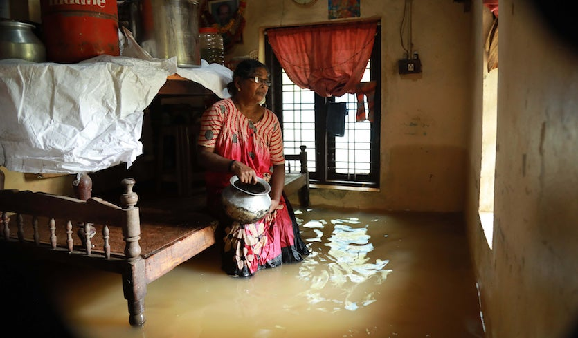
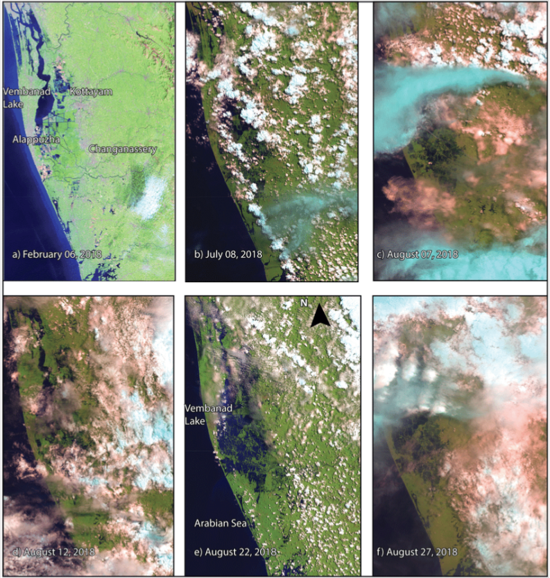
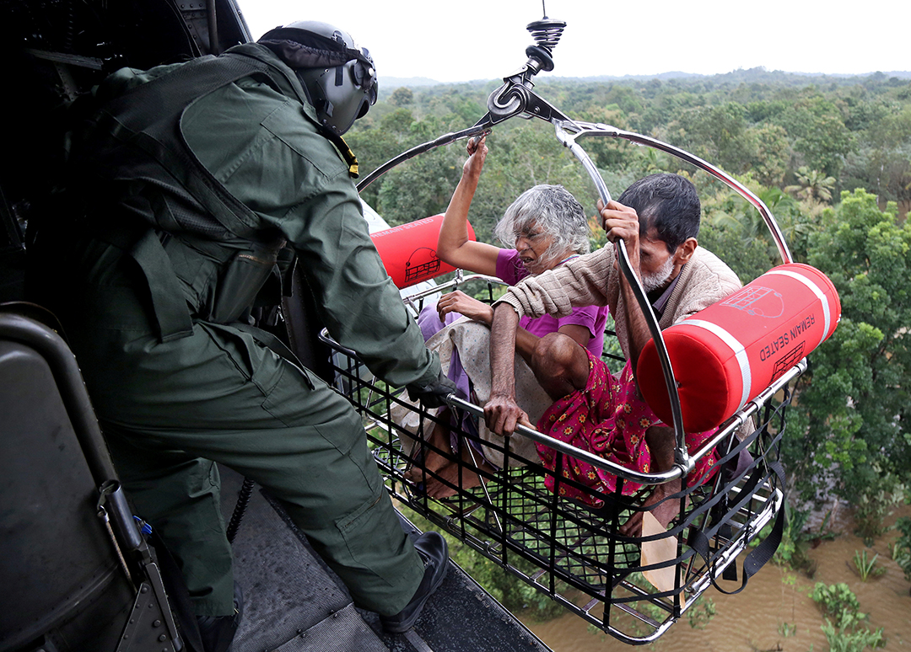
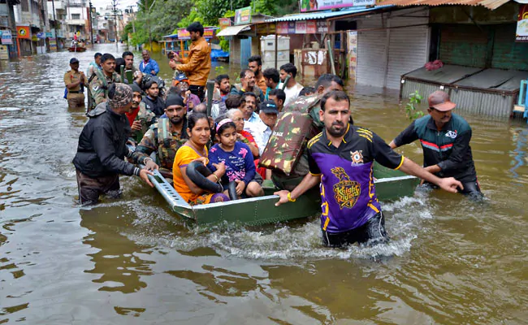
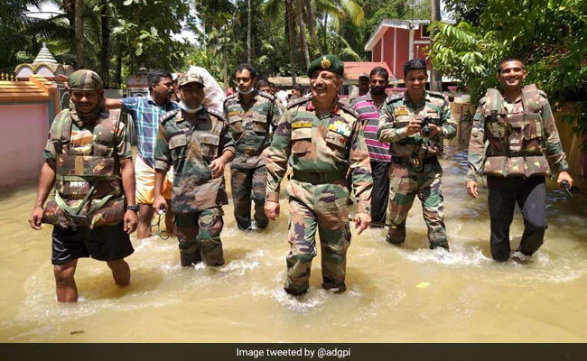

Galleria Storica






Info fotografiche
Qui una galleria di immagini risalenti al periodo dell'alluvione, si possono notare i soccorsi e le dure condizioni di vita che persistevano durante quei mesi.